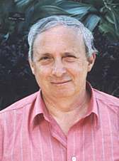

|
Victor Manta, Switzerland |
|
I'm a Swiss
stamp collector, born 1944, married and father to a daughter. Specialized in management,
computer programming and electronics, I hold a MS degree in physics. A long time ago ago I have chosen the Arts on Stamps as my main philatelic area of interest, but other topics interest me as well. One of these is the history as seen through the stamps of issuing countries. In February 2001, after a quite long and sustained activity as a Web philatelist, I have founded the Philatelic Webmasters Organization (PWO). I'm its current President and one of its principal animators. |
 |
I'm member of the Union of Swiss Philatelic Associations. In 1996 I have
founded the Paintings and Arts on Stamps Internet Club (PASIC), an association
that was joined by over 500 members from over 60 countries. PASIC is
affiliated with the biggest topical association worldwide, the ATA
(American Topical Association). In 1998 I have founded the Topicals
Stamps Club on Yahoo, joined so far by over 300 stamp collector.
My other domains of interests are Web publishing, computers, visual arts, music and philosophy. I'm also specially interested in Romania, as much in its art and history as in its stamps. As other hobbies I would mention tennis and table tennis, playing as much as watching. |
Links to my PWO member's pages:
- Venus, by Rubens
- Romanian Shot Paintings
- United Nations Geneva: A Philatelic Friendly Postal Administration
|
Created
08/04/00. |
|